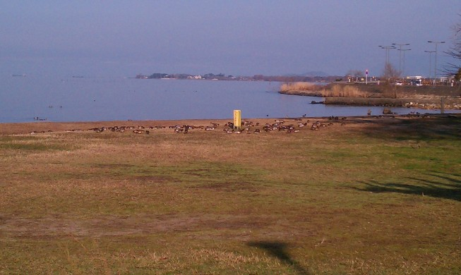
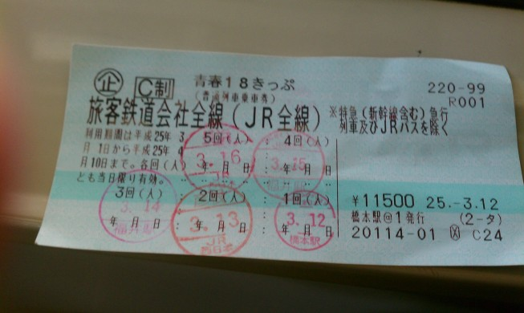
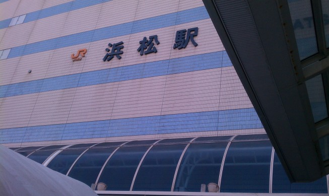
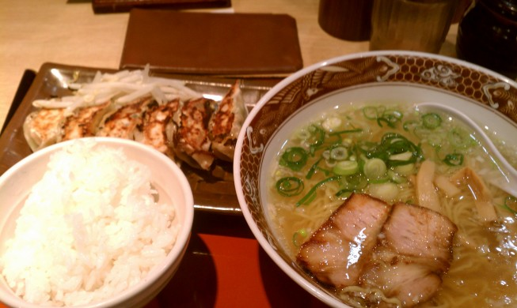
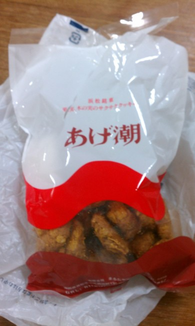

滋賀・福井旅行記(2013/03/12-)
03/16
最終日． この日は家に帰るのが目標．
ネカフェのナイトパックが終わる7時頃に出発し，朝の琵琶湖を見に行く．

朝の琵琶湖．なぜか知らんが鳥がたくさん集まっている．

改札を入る． 18きっぷのスタンプ欄が全部埋まった．
このあとはずっと電車を乗り継いでいき，途中の浜松で昼食のため一旦降りる．

うなぎでも食べようかと思ったけど，流石にどこも高い． うなぎの他には浜松餃子というのが有名らしい．初めて聞いた． B級グルメ感に素晴らしく惹かれるので，駅ビルの適当な店に入ってみる．

ラーメン餃子セット． ラーメンはそこまででもなかったけど，入っているチャーシューと餃子はおいしかった． チャーシューは脂身がトロトロで，味も染みている． 餃子は皮がパリパリに焼かれていて，食べると甘い肉汁が染みだしてくる． 餃子とご飯だけで十分にいけると思った．

浜松駅であげ潮を買って，もう一度電車に乗って家まで帰った．
ここにはかつてコメントが表示されていました